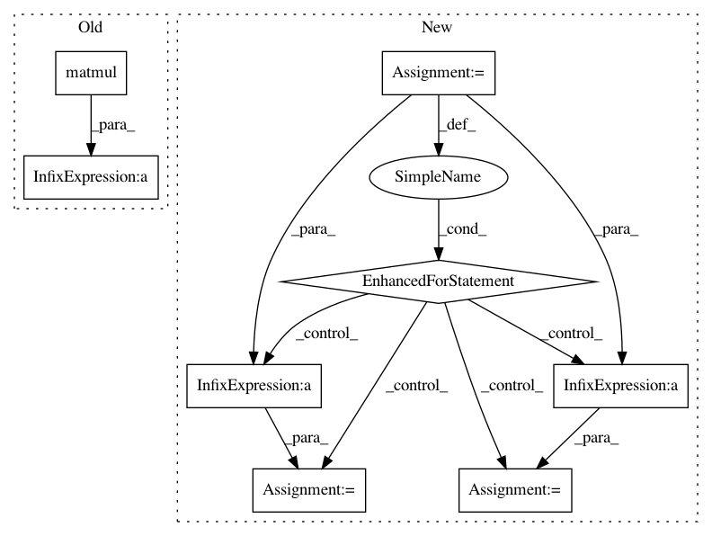

16d562f2d1a8df49fde1a2374c5e634a7400fd08,geomstats/special_euclidean_group.py,SpecialEuclideanGroup,group_exponential_barycenter,#SpecialEuclideanGroup#Any#Any#,328
Before Change
matrix += weights * matrix_aux
translation_aux += weights * np.dot(translations,
np.transpose(np.matmul(
matrix_aux,
inv_rot_mats), axes=(0, 2, 1)))
mean_translation = np.dot(translation_aux,
np.transpose(np.linalg.inv(matrix),
axes=(0, 2, 1)))
After Change
matrix_aux = self.exponential_matrix(vec_aux)
matrix_aux = np.linalg.inv(matrix_aux)
for i in range(n_points):
matrix += weights[i] * matrix_aux[i]
translation_aux += weights[i] * np.dot(np.matmul(
matrix_aux[i],
inv_rot_mats[i]),
translations[i])
mean_translation = np.dot(translation_aux,
np.transpose(np.linalg.inv(matrix),
axes=(0, 2, 1)))
In pattern: SUPERPATTERN
Frequency: 3
Non-data size: 8
Instances
Project Name: geomstats/geomstats
Commit Name: 16d562f2d1a8df49fde1a2374c5e634a7400fd08
Time: 2018-02-04
Author: ninamio78@gmail.com
File Name: geomstats/special_euclidean_group.py
Class Name: SpecialEuclideanGroup
Method Name: group_exponential_barycenter
Project Name: geomstats/geomstats
Commit Name: 5c2ae503e85bfac2346ea7a562c476c943bb3ec9
Time: 2018-02-03
Author: ninamio78@gmail.com
File Name: geomstats/special_orthogonal_group.py
Class Name: SpecialOrthogonalGroup
Method Name: matrix_from_rotation_vector
Project Name: uber/pyro
Commit Name: 3040d26d11096c12daf417cd46912bb30f5dafab
Time: 2020-04-21
Author: fehiepsi@gmail.com
File Name: pyro/infer/mcmc/hmc.py
Class Name: HMC
Method Name: _kinetic_energy